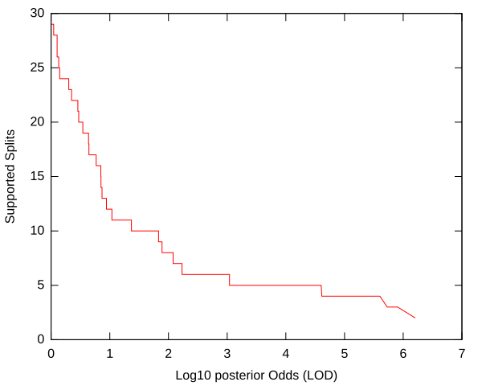
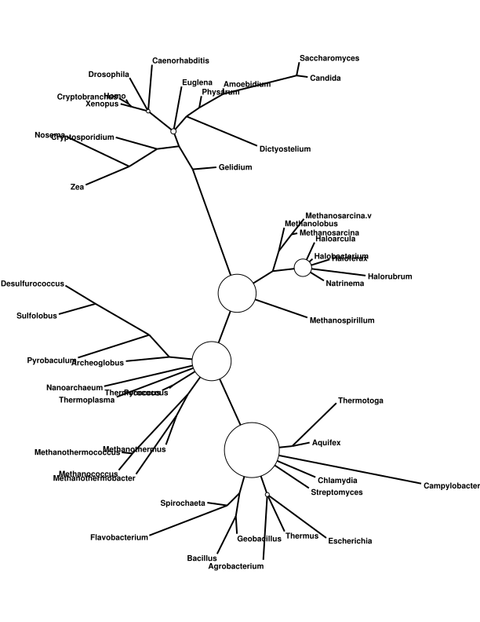
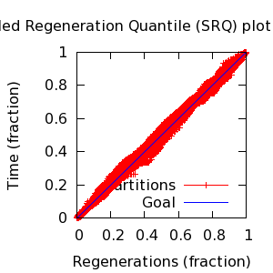
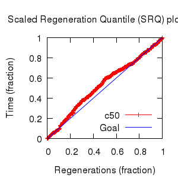

MCMC Post-hoc Analysis: 48 sequences
| Partition | Sequences | Lengths | Alphabet | Substitution Model | Indel Model | Scale Model |
|---|
| 1 |
48-fsa.fasta |
110 - 131 |
RNA | S1 = gtr+Rates.gamma[4]+inv |
I1 = rs07 |
scale1 ~ gamma[0.5,2,0.0] |
| Statistic | Median | 95% BCI | ACT | ESS | burnin | PSRF-CI80% | PSRF-RCF |
|---|
| prior |
-470.3 |
(-537.4, -406.5) |
26.66 |
53770 |
279
|
1 | 0.9995
|
| prior_A1 |
-754.2 |
(-817.1, -696.4) |
27.41 |
52302 |
279
|
1 | 0.9985
|
| likelihood |
-4041 |
(-4082, -4000) |
35.26 |
40651 |
237
|
1 | 0.9982
|
| posterior |
-4511 |
(-4568, -4459) |
13.74 |
104298 |
228
|
1 | 0.9985
|
| Heat.beta |
1 |
| | | | | |
| Scale[1] |
12.36 |
(8.833, 16.54) |
4.88 |
293739 |
180
|
1 | 1.002
|
| gtr:pi[A] |
0.2127 |
(0.1782, 0.2496) |
25.04 |
57239 |
572
|
1 | 1.001
|
| gtr:pi[C] |
0.2822 |
(0.2475, 0.3183) |
13.43 |
106764 |
273
|
1 | 1.001
|
| gtr:pi[G] |
0.2879 |
(0.2468, 0.3314) |
29.92 |
47899 |
332
|
1 | 1
|
| gtr:pi[U] |
0.2152 |
(0.1844, 0.2469) |
28.73 |
49886 |
1017
|
1 | 1.003
|
| gtr:sym[AC] |
0.06996 |
(0.04235, 0.1) |
9.525 |
150483 |
353
|
1 | 1.003
|
| gtr:sym[AG] |
0.205 |
(0.1577, 0.2554) |
18.73 |
76526 |
849
|
1 | 0.9987
|
| gtr:sym[AU] |
0.232 |
(0.1757, 0.2922) |
35.56 |
40311 |
886
|
1 | 1.001
|
| gtr:sym[CG] |
0.09082 |
(0.06181, 0.1233) |
28.22 |
50790 |
1020
|
1 | 1.005
|
| gtr:sym[CU] |
0.3511 |
(0.2876, 0.4173) |
23.65 |
60595 |
526
|
1 | 0.9992
|
| gtr:sym[GU] |
0.04625 |
(0.02222, 0.0729) |
13.07 |
109695 |
437
|
1 | 0.9984
|
| Rates.gamma:alpha |
1.328 |
(0.7789, 1.873) |
12.65 |
113293 |
374
|
0.9999 | 1.001
|
| inv:p_inv |
0.1436 |
(0.06041, 0.2317) |
9.495 |
150956 |
205
|
0.9999 | 1.002
|
| rs07:mean_length |
1.954 |
(1.608, 2.355) |
20.13 |
71188 |
389
|
0.9998 | 1.001
|
| rs07:log_rate |
-3.504 |
(-3.812, -3.207) |
14.41 |
99487 |
403
|
1 | 1.001
|
| |A1| |
201 |
(186, 215) |
169.3 |
8465 |
2829 |
0.9682 | 0.99
|
| #indels1 |
101 |
(90, 111) |
26.78 |
53528 |
265 |
0.9286 | 0.998
|
| |indels1| |
189 |
(163, 213) |
49.61 |
28892 |
518 |
0.9734 | 0.9955
|
| #substs1 |
1023 |
(1001, 1045) |
46.77 |
30648 |
611 |
0.9707 | 0.9976
|
| Scale1*|T| |
13.75 |
(11.24, 16.63) |
14.13 |
101470 |
322
|
0.9998 | 1.002
|
| |A| |
201 |
(186, 215) |
169.3 |
8465 |
2829 |
0.9682 | 0.99
|
| #indels |
101 |
(90, 111) |
26.78 |
53528 |
265 |
0.9286 | 0.998
|
| |indels| |
189 |
(163, 213) |
49.61 |
28892 |
518 |
0.9734 | 0.9955
|
| #substs |
1023 |
(1001, 1045) |
46.77 |
30648 |
611 |
0.9707 | 0.9976
|
| |T| |
1.116 |
(0.8416, 1.415) |
1.017 |
1409462 |
71
|
1 | 0.9999
|


| Partition support: Summary |
| Partition support graph: SVG |
Partition 1
|
|
|
Diff |
|
Min. %identity |
# Sites |
Constant |
Informative |
| Initial |
FASTA |
HTML |
Diff |
|
17.7% |
214 |
6 (2.8%) |
187 (87.4%) |
| Best (WPD) |
FASTA |
HTML |
|
AU |
25.8% |
206 |
8 (3.88%) |
152 (73.8%) |


- Partition uncertainty
- SRQ plot: partitions
- SRQ plot: c50
- Variation in split frequency estimates
| burnin (scalar) | ESS (scalar) | ESS (partition) | ASDSF | MSDSF | PSRF-CI80% | PSRF-RCF |
|---|
| 2829 | 8465 | 10999.325 | 0.007 | 0.024
| 1 | 1.005 |
command line: bali-phy 48-fsa.fasta -S gtr+Rates.gamma+inv
directory: /gpfs/fs0/data/wraycompute/br51/Work/3.1
| chain # | burnin | subsample | Iterations (after burnin) | subdirectory |
|---|
| 1 |
19236 |
1 |
180764 |
48-fsa-1 |
| 2 |
19236 |
1 |
180764 |
48-fsa-2 |
| 3 |
19236 |
1 |
180764 |
48-fsa-3 |
| 4 |
19236 |
1 |
180764 |
48-fsa-4 |
| 5 |
19236 |
1 |
173128 |
48-fsa-5 |
| 6 |
19236 |
1 |
180764 |
48-fsa-6 |
| 7 |
19236 |
1 |
180084 |
48-fsa-7 |
| 8 |
19236 |
1 |
176297 |
48-fsa-8 |
| P(data|M) = -4085.760 +- 0.389
|
Complete sample: 1586668
topologies |
95% Bayesian credible interval: 1507308 topologies |
| topology | ~ uniform on tree topologies |
| branch lengths | ~ iid[num_branches[T],gamma[0.5,div[2,num_branches[T]],0.0]] |
| S1 | = |
gtr+Rates.gamma[4]+inv
| gtr:sym | ~ | dirichlet_on[letter_pairs[a],1]
|
| gtr:pi | ~ | dirichlet_on[letters[a],1]
|
| Rates.gamma:alpha | ~ | log_laplace[6,2]
|
| inv:p_inv | ~ | uniform[0,1]
|
|
| I1 | = |
rs07
| rs07:log_rate | ~ | laplace[-4,0.707]
|
| rs07:mean_length | ~ | exponential[10,1]
|
|
{kind=link}
{kind=link}
{kind=link}
{kind=link}
{kind=link}
{kind=link}
{kind=link}
{kind=link}
{kind=link}
{kind=link}
{kind=link}
{kind=link}